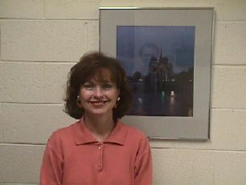

-
Sister Geddes has been teaching at Ricks College in the Division
of Arts and Letters since 1984.
- She teaches English, French and Book o f Mormon.
- Both her husband, Matt and she taught at Brigham Young University- Hawaii before coming to Ricks.
- At Brigham Young University- Hawaii Campus she taught French and English As A Second Language.
- Schools she hasattended:
UCLA
University of Grenoble, France
Brigham Young University-Hawaii, Brigham YoungUniversity
- At Brigham Young University she received her Bachelor's degree in English and French
teaching and her Master's degree in Linguistics (Teaching English As A Second Language).
- She is an avid traveler and bonified francophile and has returned to Europe and France
eight times since living there as a student.
- She has served as French interpreter to international folk dance festivals both in Southern France and Quebec.
- Her motto is, "C'est bon la vie!" (Life is good!)